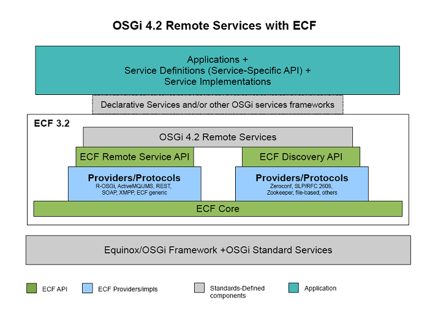

an eclipse runtime project
New and Noteworthy
3.2.0 Release
Return to ECF download page
New and Noteworthy for 3.1.0
New and Noteworthy for 3.0.0
New and Noteworthy for 2.1.0

|
eclipse communication framework
an eclipse runtime project New and Noteworthy 3.2.0 Release Return to ECF download page New and Noteworthy for 3.1.0 New and Noteworthy for 3.0.0 New and Noteworthy for 2.1.0 |
|
|
ECF 3.2 has support for the OSGi 4.2 remote services specification which is specified in chapter 13 in compendium section. This is the initial mplementation of this specification. The notable features of this ECF's implementation are Transport Independence, Lightweight, Standard Open Source Open Team Open Process, Extensibility and etc. See ECF Blog, ECF Wiki on OSGi 4.2 and ECF and ECF Wiki on Getting started with OSGi Remote Services for more details about this.  |
|
|
ECF 3.2 is consists of SOAP based provider support for remote services. REST based remote service support was added to the ECF 3.1 release and ECF 3.2 now have OSGi 4.2 remote services implementation along with SOAP based remote services support. SOAP is not a protocol but it is a rpc style and it works as a serialization format as well. Hence ECF's does not have a single SOAP provider. Instead of a single implementation of a SOAP provider ECF 3.2 has included some utility and implementation classes for creating SOAP based providers. See ECF Wiki and ECF blog for more details. REST API support for Remote Services was initially added to the ECF 3.1 release and See ECF Wiki and ECF Blog for more details about the ECF REST support for Remote services. |
|
|
ECF remote services API allows arbitrary services to be exposed for remote access and invocation. Some of these services are long running and/or computationally intensive. So it is a good practice to use multiple servers to execute these services. Dynamic load balanacing among these servers helps to prevent servers being overloaded. ECF now has dynamic load balancing example that uses a JMS Queue via ECF ActiveMQ provider implementation of JMS to do dynamic load balancing for ECF remote service method/request invocations. See ECF Wiki for more details. |
|
|
Remote services API is an major API in the ECF and it has been there for a quite long time. Though the API was there, number of exmaples existed in the ECF was very few. So in this ECF 3.2 release a set of examples for ECF remote services being included. These examples give a thorough knowledge on using ECF Remote Rervices API. See ECF Wiki for more. |
|
|
Google's wave protocol is an emerging server-to-server protocol for real-time updates and replicated state synchronization. The protocol is being specified and developed in the open at www.waveprotocol.org.
Using the following 3 ECF characteristics Currently the implementation is not completed and it is under construction. See ECF Bug request for more details. |